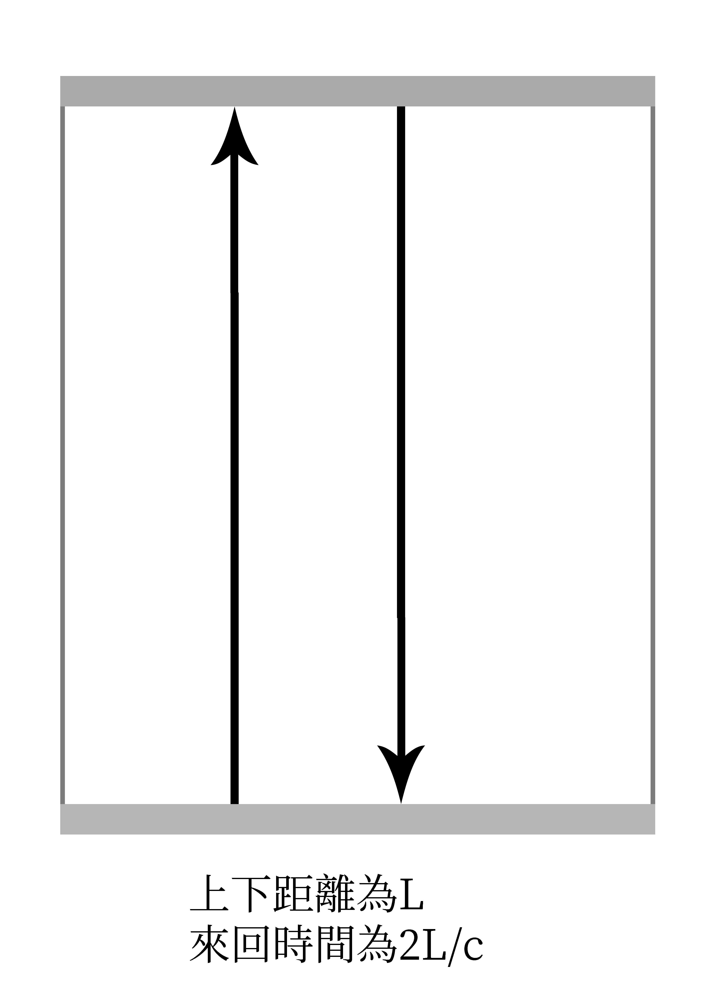

速度越快，時間越慢
2017年5月27日
你知道嗎，當你速度越快，時間就越慢，而且空間還會因此變小，為什麼呢？讓我們一起來看看！
時間、空間、速度
在愛因斯坦的相對論中，用 E=mc2 證明了光速是最快的速度，而根據裡面的理論，速度的快慢會影響時間跟空間，讓我們看看其中奧妙
怎麼說？
我們在說明這個現象前，要先提到一個基本原則：
- 光速最快，速度為
c
現在，有兩個人， A 在靜止的平面上， B 在一艘太空船上，兩個人都擁有一個一樣規格的光鐘(假設真的有這個東西)

B 的太空船以極快的速度飛越 A 的上方A 會看到太空船上的光鐘，變成等腰三角形的形狀(懶得畫圖，自行想像)，那當然，光鐘裡的光速度不變，等腰三角形的 兩腰 長，當然會比 高 還長，所以：
L2 > L
A的時間是 2L/c ，但A看到B的光鐘時間為 2L2/c ，所以A覺得B的時間比他慢
這個現象稱為 時間膨脹
影響
當然，這個誤差，對你我都幾乎沒影響，但對科學家來說，在運送原子鐘時，就要考量到這個誤差，這個膨脹還會造成 空間收縮 ，因為：
s=vt
t 會因為時間膨脹而影響，速度越快，t 越小，s(距離)當然會縮小
依照上面的公式運算，時速72公里的火車，約要開1400萬年，才會與地面的時間誤差一秒(是有差喔…)